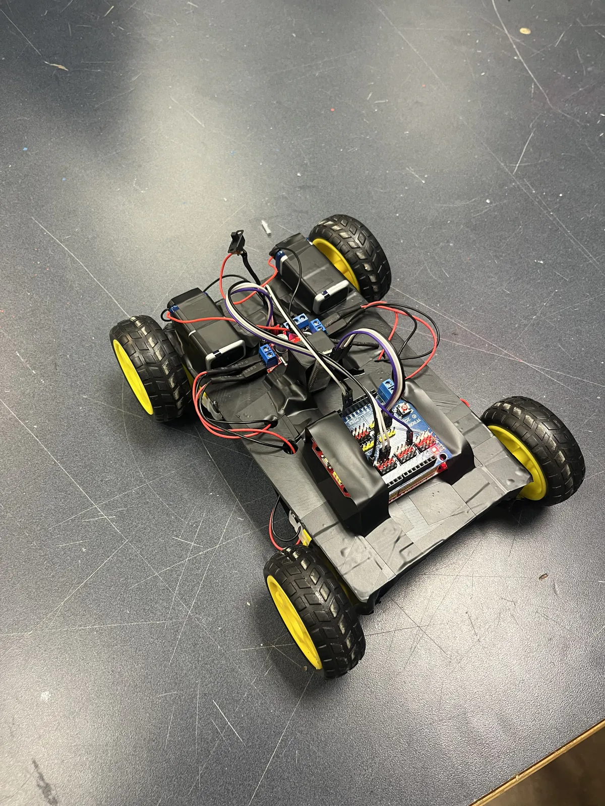

Overview
The car is driven from a mobile phone using the Dabble gamepad interface. Commands travel over Bluetooth to an Arduino, which sets the speed and direction of each side of the car, and an L298N motor controller delivers battery power to the four motors. The car turns by driving its left and right sides at different speeds. The chassis and removable body shell are 3D printed parts I designed in Autodesk Fusion.
I designed and built this car as an independent project in high school. It brought together four areas of engineering: circuit design and power distribution, embedded firmware, a wireless control link, and the mechanical design of a chassis that carries it all. The electronics are commercial modules. The chassis plate, motor mounts and body shell are original designs I modelled in Autodesk Fusion computer-aided design software and printed by fused deposition modelling. The page follows the project in the order I worked through it, from defining the problem to testing and reviewing the finished car.
Engineering design process
Define the problem
Step 1 · Problem definitionIn shortA small vehicle driven from a mobile phone, with every subsystem built into a custom chassis.
The goal was a phone-controlled vehicle that could drive forward and backward and turn in place, with the motors, motor controller, radio and power supply all integrated on a chassis I designed myself.
Set requirements and constraints
Step 2 · RequirementsIn shortI set the car's functions, safety features and manufacturing limits before starting any design work.
- Function: drive forward and backward, turn left and right, and stop whenever there is no input.
- Safety: stop automatically if the Bluetooth connection drops, and cut all power from one switch.
- Serviceability: a body that comes off without tools, so the wiring stays accessible.
- Manufacturability: every structural part prints on a desktop fused deposition modelling printer without support material.
The design also had to work with a fixed set of parts: 3 to 6 V gear motors, an L298N motor controller and 9 V batteries. As the next steps show, those parts shaped several later decisions.
Choose the steering, control and system layout
Step 3 · Concept selectionIn shortI chose tank steering, where one side drives forward and the other backward to turn, and planned the full system around it.
Car-style (Ackermann) steering would have needed a servo, a steering linkage and pivoting front hubs, all with tight tolerances that are hard to hit with printed parts. I chose differential (tank) steering instead, which needs none of that. All four wheels are fixed, each side's two motors are wired together, and the car turns by driving the two sides at different speeds. The tradeoffs are tyre scrub during turns and no proportional steering angle, and neither matters much for a small indoor car. This layout also let all four motor mounts be one common part, and a single L298N could drive the whole car, with one channel per side.
For control I selected Dabble, a mobile app with a ready-made gamepad interface and an Arduino library that reads the button states directly. That kept my development time on how the car drives instead of on building a phone app.
With the concept set, I laid out the system as two separate paths. The control path carries information: a gamepad input in the Dabble app crosses the Bluetooth link, the Arduino decodes it, and the Arduino sends logic-level signals to the motor controller. The power path carries energy from the batteries, through the main switch, to the motor controller and the Arduino. Planning the two paths separately kept the wiring simple and made faults easy to isolate later.
Swipe sideways to see the full diagram →
Fig. 1. System block diagram of the selected concept. Thin lines carry information and heavy lines carry power. Part Qty Function Selection rationale Arduino Uno + sensor shield 1 Runs the control firmware. Decodes the Bluetooth commands and drives the motor controller inputs. The shield breaks every pin out to a three-pin header (signal, 5 V, ground), so modules connect directly without a breadboard. Bluetooth serial module 1 Receives the commands sent from the Dabble app and passes them to the Arduino as a serial stream. Lets a mobile phone running Dabble act as the controller, so the car needs no dedicated handheld transmitter. L298N motor controller 1 Dual H-bridge. Each channel switches a high motor current in either direction on command from the Arduino. An Arduino pin supplies about 20 mA, while a gear motor draws several hundred. The H-bridge provides that current and lets each motor run in reverse. Direct-current gear motor, 3 to 6 V 4 One per wheel. The built-in gearbox trades speed for torque. Driving all four wheels lets the car steer without a steering linkage. 9 V battery 2 Power source. Two batteries wired in parallel. Wiring them in parallel keeps the supply at 9 V while splitting the current between the two batteries, which reduces voltage sag. Battery switch 1 Cuts the positive rail. Shuts off all power from one place before any work on the wiring. 3D printed chassis, mounts, body set Holds every component in place. Modelled in Autodesk Fusion from caliper measurements of each part. Design the electrical system
Step 4 · Electrical designIn shortThe batteries supply the power, the Arduino decides when each motor runs, and the motor controller does the switching.
I started the circuit design with a voltage budget. The L298N loses about 2 V across its output transistors under load, so a 9 V supply leaves about 7 V at the motors at full duty, which is above their 6 V rating. Instead of changing the hardware, I capped the duty cycle in the firmware. The cruise setting of 170 out of 255 gives about 4.7 V at the motors on average, and the boost setting of 215 gives about 6 V, so the motors are never run at 100%.
I wired the two batteries in parallel because a 9 V alkaline battery has high internal resistance, and its voltage drops sharply when four motors draw current at once. In parallel, each battery supplies half the current and the run time roughly doubles, with no increase in supply voltage. All subsystems share a common ground, so the motor controller always reads the Arduino's logic signals correctly.
Wiring the motors in pairs kept the pin count low. Each L298N channel uses three Arduino pins: one pulse-width modulation output for speed and two outputs for direction, so the full drive system uses six pins.
Swipe sideways to see the full diagram →
Fig. 2. Circuit schematic. Every +9V label is the same switched battery rail, and every ground symbol is the same ground. A cross marks a terminal that is not connected. Arduino pin Connection Function D2 Bluetooth TXD Serial data, phone to Arduino D3 Bluetooth RXD Serial data, Arduino to phone D5 (pulse-width modulation) L298N ENA Left pair speed D4, D7 L298N IN1, IN2 Left pair direction D6 (pulse-width modulation) L298N ENB Right pair speed D8, D12 L298N IN3, IN4 Right pair direction VIN, GND Switched 9 V rail, ground Microcontroller supply Design and print the mechanical parts
Step 5 · Mechanical designIn shortI designed a custom chassis and body around the measured parts and 3D printed them.
I modelled the chassis in Autodesk Fusion computer-aided design software as a flat plate, dimensioned from caliper measurements of the motors, circuit boards and battery holders instead of the dimensions in product listings. The four motors mount underneath the plate, leaving the top clear for the electronics, and their leads run through holes in the plate. The Arduino sits at the front, the batteries at the rear and the motor controller between them, which keeps the motor leads short and spreads the weight over both axles.
The body is a separate shell with flat faces and shallow draft angles, so it prints without supports. It sits over the chassis and lifts straight off. I produced every part by fused deposition modelling 3D printing, then assembled and soldered the electronics onto the chassis.

Body removed. The Arduino and sensor shield mount at the front of the chassis and the battery holders at the rear, with the motor leads routed through holes in the plate. 
Body fitted. The shell lifts off by hand, so the wiring stays easy to reach for service. Write the firmware
Step 6 · SoftwareIn shortA fast loop reads the controller, sets a target for each side and updates the motors.
I kept the Arduino C++ firmware short. It reads the Dabble gamepad, turns the button states into a target speed and direction for each side, and ramps the motor output toward that target in small steps for smooth acceleration. The full code, explained section by section, is in the next section.
Integrate and test in stages
Step 7 · VerificationIn shortI tested each subsystem on its own before running the assembled car.
I started with power, using a multimeter to check the switched rail and the 5 V regulator output before connecting any module. Next, with the wheels off the ground, I drove each side forward and swapped the leads at the screw terminal on any motor that spun the wrong way. I then tested the Bluetooth link on its own by pairing the phone, opening Dabble and printing the button states to the serial monitor. Only after that did the car go on the floor for straight-line, reverse and turning tests. The final test closed the app mid-drive to confirm the car stopped on its own.
Review the result
Step 8 · EvaluationIn shortThe finished car met every requirement, and my review pointed to clear upgrades for a next version.
The finished car met every requirement from Step 2. Reviewing it afterward, the first upgrade I identified was the battery. 9 V alkaline batteries are made for smoke detectors, not motors, and a two-cell lithium-ion pack or six NiMH AA cells would deliver much more current with far less voltage sag. The second was the motor controller. A MOSFET-based driver such as the TB6612FNG drops well under 0.5 V instead of 2 V, so far more of the battery's energy would reach the wheels.
I also noted smaller upgrades. A resistor divider on the Bluetooth RX line would protect its 3.3 V input from the Arduino's 5 V signal on D3. Crimped connectors would replace the taped joints, a fuse would protect the battery rail, and wheel encoders would let the car hold a straight line even though no two motors run at exactly the same speed.
The code, explained
Arduino C++ · uses the Dabble library · this is a cleaned-up and commented version of the sketch
#define CUSTOM_SETTINGS
#define INCLUDE_GAMEPAD_MODULE
#include <Dabble.h>Load the Dabble library
Dabble includes several modules, such as a gamepad, a terminal and sensor readouts. An Arduino Uno only has 32 KB of program memory, so these two #define lines tell the library to compile just the gamepad module.
// ---- Pin map -------------------------------------------------------------
const uint8_t BT_RX_PIN = 2;
const uint8_t BT_TX_PIN = 3;
const uint8_t LEFT_EN = 5; // ENA: pulse-width modulation speed, left pair
const uint8_t LEFT_FWD = 4;
const uint8_t LEFT_REV = 7;
const uint8_t RIGHT_EN = 6; // ENB: pulse-width modulation speed, right pair
const uint8_t RIGHT_FWD = 8;
const uint8_t RIGHT_REV = 12;
// ---- Tuning --------------------------------------------------------------
const int SPEED_CRUISE = 170; // 0 to 255. Default driving speed. About 4.7 V at the motors.
const int SPEED_BOOST = 215; // Held while the Triangle button is down. About 6 V at the motors.
const int SPEED_TURN = 150; // Spin-in-place speed. Lower is easier to control.
const int RAMP_STEP = 12; // Largest change in pulse-width modulation per control cycle.
const unsigned long CYCLE_MS = 20; // Control loop period (50 Hz).Name every pin and every tuning number
Every pin and tuning value is defined once, by name, at the top of the file. Moving a wire or changing the speed is a one-line change that never touches the control logic.
SPEED_CRUISE = 170 is a pulse-width modulation duty value. Pulse-width modulation switches the motor supply on and off very quickly, and a duty of 170 out of 255 powers the motor about two thirds of the time. After the controller's losses, that averages to about 4.7 V.
// ---- State ---------------------------------------------------------------
int leftTarget = 0, rightTarget = 0; // What the driver is asking for, -255 to 255
int leftNow = 0, rightNow = 0; // What the motors are actually getting
unsigned long lastCycle = 0;
// Send one signed speed to one side of the car.
// Positive = forward, negative = reverse, zero = coast to a stop.
void driveSide(uint8_t enPin, uint8_t fwdPin, uint8_t revPin, int speed) {
digitalWrite(fwdPin, speed > 0 ? HIGH : LOW);
digitalWrite(revPin, speed < 0 ? HIGH : LOW);
analogWrite(enPin, abs(speed));
}
// Move "now" toward "target" by at most RAMP_STEP so the motors never see a
// sudden jump from full forward to full reverse.
int ramp(int now, int target) {
if (target > now) return min(now + RAMP_STEP, target);
if (target < now) return max(now - RAMP_STEP, target);
return now;
}Two small helper functions
driveSide() takes one signed number. A positive value drives the pair forward, a negative value drives it in reverse, and zero stops it. It sets the two direction pins from the sign and writes the size of the number as the pulse-width modulation duty. Because the pin numbers are passed in, the same function runs both the left and right sides.
ramp() limits how fast the duty can change. Jumping straight from full forward to full reverse causes a current spike that can drop the supply voltage enough to reset the Arduino. Ramping spreads that change over about a third of a second.
void setup() {
pinMode(LEFT_EN, OUTPUT); pinMode(LEFT_FWD, OUTPUT); pinMode(LEFT_REV, OUTPUT);
pinMode(RIGHT_EN, OUTPUT); pinMode(RIGHT_FWD, OUTPUT); pinMode(RIGHT_REV, OUTPUT);
driveSide(LEFT_EN, LEFT_FWD, LEFT_REV, 0);
driveSide(RIGHT_EN, RIGHT_FWD, RIGHT_REV, 0);
Dabble.begin(9600, BT_RX_PIN, BT_TX_PIN); // Match the Bluetooth module's baud rate.
}Setup: runs once at power-on
All motor pins are set as outputs and both sides are set to zero before anything else runs, so the car stays still at power-up. The Bluetooth link then starts on pins 2 and 3 at 9600 baud, which matches the module's setting.
void loop() {
Dabble.processInput(); // Read whatever the phone has sent since last time.
// 1. Turn button state into a target speed for each side.
int speed = GamePad.isTrianglePressed() ? SPEED_BOOST : SPEED_CRUISE;
if (!Dabble.isAppConnected()) { // Phone out of range or app closed: stop.
leftTarget = 0; rightTarget = 0;
} else if (GamePad.isUpPressed()) {
leftTarget = speed; rightTarget = speed;
} else if (GamePad.isDownPressed()) {
leftTarget = -speed; rightTarget = -speed;
} else if (GamePad.isLeftPressed()) { // Left side backward, right side forward.
leftTarget = -SPEED_TURN; rightTarget = SPEED_TURN;
} else if (GamePad.isRightPressed()) {
leftTarget = SPEED_TURN; rightTarget = -SPEED_TURN;
} else { // Nothing held: stop.
leftTarget = 0; rightTarget = 0;
}
// 2. Every 20 ms, step the real motor output toward the target.
unsigned long nowMs = millis();
if (nowMs - lastCycle >= CYCLE_MS) {
lastCycle = nowMs;
leftNow = ramp(leftNow, leftTarget);
rightNow = ramp(rightNow, rightTarget);
driveSide(LEFT_EN, LEFT_FWD, LEFT_REV, leftNow);
driveSide(RIGHT_EN, RIGHT_FWD, RIGHT_REV, rightNow);
}
}Loop: runs forever
First, the loop reads. Dabble.processInput() picks up whatever the phone has sent since the last pass.
Then it decides. A chain of if statements turns the button states into a target speed for each side. The first check is the fail-safe: if the app is not connected, both targets are zero. For left and right turns, the two sides drive in opposite directions so the car spins on the spot.
Finally, it acts. Every 20 ms the output takes one ramp step toward the target. Timing uses millis() instead of delay(), so the loop keeps listening to the Bluetooth link while it waits.
What this project taught me
Signals and power are different problems
A logic pin carries information and a motor lead carries power. Most of my early wiring faults came from treating the two the same, so I learned to design and wire them as separate paths.
Read the datasheet before selecting parts
The L298N's 2 V drop and a 9 V battery's internal resistance set the limits on this car's performance, and both figures were on the datasheets before I bought anything.
Design around measured parts
Modelling the chassis from caliper measurements of the real motors and boards saved me from reprinting parts, because the dimensions in product listings were often wrong.
Test in stages
Bringing up power, then motors, then radio, then the full car meant that every fault I hit was easy to isolate.